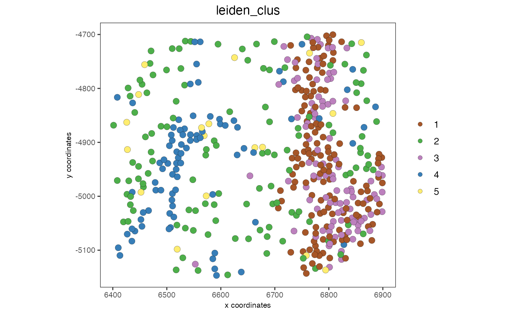
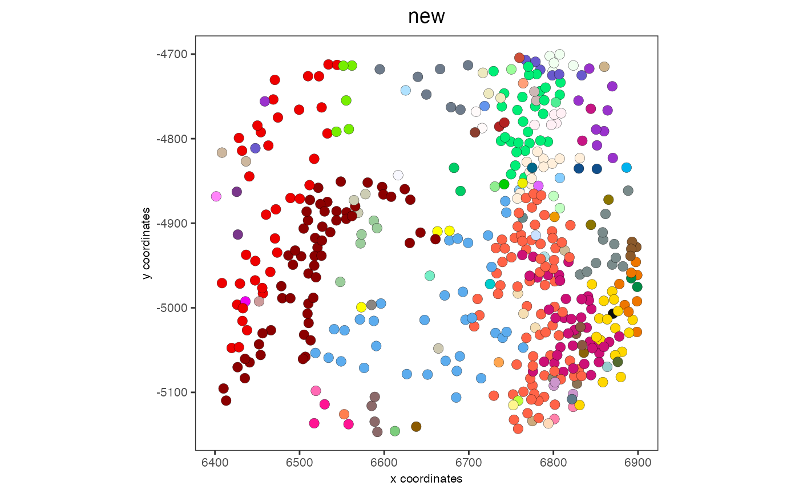

Split cluster annotations based on a spatial network
Source:R/spatial_clusters.R
spatialSplitCluster.RdSplit cluster annotations based on a spatial network
Usage
spatialSplitCluster(
gobject,
spat_unit = NULL,
feat_type = NULL,
spatial_network_name = "Delaunay_network",
cluster_col,
split_clus_name = paste0(cluster_col, "_split")
)Arguments
- gobject
giotto object
- spat_unit
spatial unit (e.g. "cell")
- feat_type
feature type (e.g. "rna", "dna", "protein")
- spatial_network_name
character. Name of spatial network to use
- cluster_col
character. Column in metadata containing original clustering
- split_clus_name
character. Name to assign the split cluster results information to split
Examples
g = GiottoData::loadGiottoMini('vizgen')
#> 1. read Giotto object
#> 2. read Giotto feature information
#> [1] "/Library/Frameworks/R.framework/Versions/4.3-arm64/Resources/library/GiottoData//Mini_datasets/Vizgen/VizgenObject//Features/rna_feature_spatVector.shp"
#> [1] "rna"
#> 3. read Giotto spatial information
#>
#> 3.1 read Giotto spatial shape information
#> [1] "aggregate_spatInfo_spatVector.shp" "z0_spatInfo_spatVector.shp"
#> [3] "z1_spatInfo_spatVector.shp"
#> aggregate
#> z0
#> z1
#>
#> 3.2 read Giotto spatial centroid information
#> aggregate
#> z0
#> z1
#>
#> 3.3 read Giotto spatial overlap information
#> [1] "rna_aggregate_spatInfo_spatVectorOverlaps.shp"
#> [2] "rna_z0_spatInfo_spatVectorOverlaps.shp"
#> [3] "rna_z1_spatInfo_spatVectorOverlaps.shp"
#> [1] "poly_ID" "feat_ID" "feat_ID_uniq" "stack"
#> aggregate and rna
#> [1] "poly_ID" "feat_ID" "feat_ID_uniq"
#> z0 and rna
#> [1] "poly_ID" "feat_ID" "feat_ID_uniq"
#> z1 and rna
#>
#> 4. read Giotto image information
#>
#> no external python path was provided, but a giotto python environment was found
#> and will be used
activeSpatUnit(g) = 'aggregate'
spatPlot2D(g, cell_color = 'leiden_clus')

g = spatialSplitCluster(g,
cluster_col = 'leiden_clus',
split_clus_name = 'new')
# don't show legend since there are too many categories generated
spatPlot2D(g, cell_color = 'new', show_legend = FALSE)
